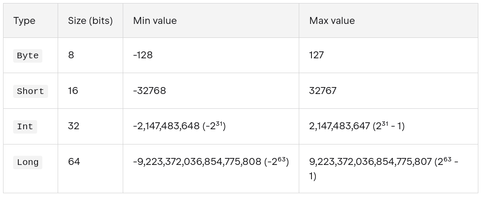
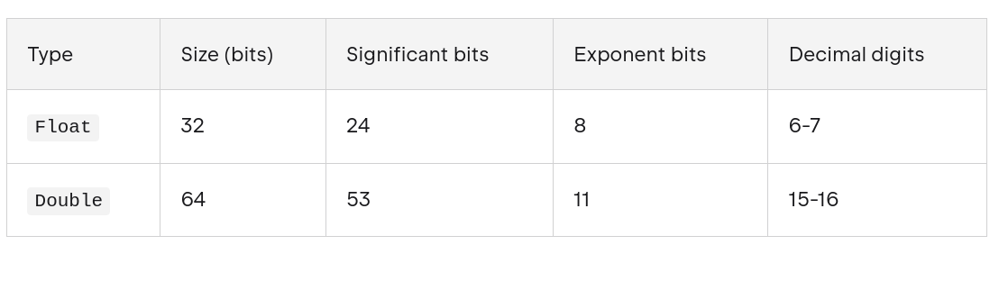

The Kotlin language
Kotlin is a cross-platform, statically typed, general-purpose high-level programming language with type inference. Kotlin is designed to interoperate fully with Java, and the JVM version of Kotlin's standard library depends on the Java Class Library.
Kotlin mainly targets the JVM, but also compiles to JavaScript or native code.Language development costs are borne by JetBrains, while the Kotlin Foundation protects the Kotlin trademark.
The Android Kotlin compiler emits Java 8 bytecode by default (which runs in any later JVM), but allows targeting Java 9 up to 20, for optimizing.
On 7 May 2019, Google announced that the Kotlin programming language had become its preferred language for Android app developers. Since the release of Android Studio 3.0 in October 2017, Kotlin has been included as an alternative to the standard Java compiler.
References:
Hello world
Open the Kotlin Playground and write and execute this code:
1 2 3 | |
fun main() is the entry point of the program. All Kotlin programs are required to have a main function, which is the specific place in your code where the program starts running.
println is a function that takes an argument as a String and outputs its content to the console.
Tip
You can also run Kotlin code in Android Studio creating a new file on an exisiting project and running that file.
Variables
To create a variable, use var or val, and assign a value to it with the equal sign (=):
1 2 | |
The difference between var and val is that variables declared with the var keyword can be modified, while val variables cannot. val variables are immutable.
Kotlin uses type inference, but you can specify the type when create a variable:
1 2 | |
The general rule for naming Kotlin variables are:
- Names can contain letters, digits, underscores, and dollar signs.
- Names should start with a letter,
$and_ - Names are case sensitive ("myVar" and "myvar" are different variables)
- Names should start with a lowercase letter and it cannot contain whitespace
- Reserved words (like Kotlin keywords, such as var or String) cannot be used as names
Types
In Kotlin, everything is an object in the sense that you can call member functions and properties on any variable.
For integer numbers, there are four types with different sizes and value ranges:

When you initialize a variable with no explicit type specification, the compiler automatically infers the type with the smallest range enough to represent the value starting from Int. If it doesn't exceed the range of Int, the type is Int. If it does exceed that range, the type is Long. To specify the Long value explicitly, append the suffix L to the value. To use the Byte or Short type, specify it explicitly in the declaration.
1 2 3 4 | |
Info
In addition to signed integer types, Kotlin also provides unsigned integer types
For real numbers, Kotlin provides floating-point types Float and Double that adhere to the IEEE 754 standard. Float reflects the IEEE 754 single precision, while Double reflects double precision.

For variables initialized with fractional numbers, the compiler infers the Double type.
The String data type is used to store a sequence of characters (text). String values must be surrounded by double quotes:
1 | |
String literals may contain template expressions (pieces of code that are evaluated and whose results are concatenated into a string). When a template expression is processed, Kotlin automatically calls the .toString() function on the expression's result to convert it into a string. A template expression starts with a dollar sign ($) and consists of a variable name:
1 2 3 4 | |
Template expressions can also hold an expression in curly braces:
1 2 3 | |
The Boolean data type can only take the values true or false:
1 2 | |
The Char data type is used to store a single character. A char value must be surrounded by single quotes:
1 | |
Type Conversion
In Kotlin, numeric type conversion is different from Java. For example, it is not possible to convert an Int type to a Long type with the following code:
1 2 3 | |
To convert a numeric data type to another type, you must use one of the following functions: toByte(), toShort(), toInt(), toLong(), toFloat(), toDouble(), toString() or toChar():
1 2 3 | |
Nullable types and Elvis operator
Kotlin is a safe language, and among other things, it prevents us from programming errors such as NullPointerException since it does not allow variable values to be null by default.
If we want to specify that a variable can contain a null value, it is necessary to explicitly define
it as nullable. To do this, when we define it, we add a question mark ? to its type:
1 2 3 | |
In addition, Kotlin also provides us with the ?: operator, known as the Elvis operator, to
specify an alternative value when the variable is null.
1 2 3 4 5 | |
In this example we've used the ?. safe call operator. It prevents to cause an exception when the variable is null and Kotlin can't call the member function (length in this case).
Constants
We can declare constants in Kotlin using the const keyword. Constants must be initialized with a value at the time of declaration, and their value cannot be changed later. Constants can only be of primitive types and String.
1 2 | |
Tip
Use snake_case for naming constants: all uppercase letters with words separated by underscores.
The difference between val and const val is that val can be assigned a value at runtime, while const val must be assigned a value at compile time. Additionally, const val can only be used for top-level or object-level properties, while val can be used in any scope.
Operators
Arithmetic Operators
| Operator | Name | Description | Example |
|---|---|---|---|
| + | Addition | Adds together two values | x + y |
| - | Subtraction | Subtracts one value from another | x - y |
| * | Multiplication | Multiplies two values | x * y |
| / | Division | Divides one value from another | x / y |
| % | Modulus | Returns the division remainder | x % y |
| ++ | Increment | Increases the value by 1 | ++x |
| -- | Decrement | Decreases the value by 1 | --x |
Assignment Operators
| Operator | Example | Same As |
|---|---|---|
| = | x = 5 | x = 5 |
| += | x += 3 | x = x + 3 |
| -= | x -= 3 | x = x - 3 |
| *= | x *= 3 | x = x * 3 |
| /= | x /= 3 | x = x / 3 |
| %= | x %= 3 | x = x % 3 |
Comparison Operators
Comparison operators are used to compare two values, and returns a Boolean value: either true or false.
| Operator | Name | Example |
|---|---|---|
| == | Equal to | x == y |
| != | Not equal | x != y |
| > | Greater than | x > y |
| < | Less than | x < y |
| >= | Greater than or equal to | x >= y |
| <= | Less than or equal to | x <= y |
The === operator (and its negated counterpart !==) checks for referencial equality. a === b evaluates to true if and only if a and b point to the same object:
1 2 3 4 5 6 7 8 9 10 11 12 13 | |
For values represented by primitive types at runtime (for example, Int), the === equality check is equivalent to the == check.
Logical Operators
| Operator | Name | Description | Example |
|---|---|---|---|
| && | Logical and | Returns true if both statements are true | x < 5 && x < 10 |
| || | Logical or | Returns true if one of the statements is true | x < 5 || x < 4 |
| ! | Logical not | Reverse the result, returns false if the result is true | !(x < 5) |
Comments
Kotlin has single-line comments and multi-line comments:
1 2 3 4 5 | |
Control structures
if - else
The structure is similar to other languages:
1 2 3 4 5 6 7 | |
In Kotlin, if-else can return a value for each case that can be assigned to a variable:
1 2 3 4 5 | |
Warning
When using if as an expression, you must also include else (required).
That can be shortened to:
1 | |
This is equivalent to the ternary operator of other languages.
when
The when statement is similar to switch-case of C/Java:
1 2 3 4 5 6 | |
In the same way that if, when can return the result and can be assigned to a variable:
1 2 3 4 5 6 7 8 | |
while and do-while
while and do-while loops are similar to C/Java:
1 2 3 | |
1 2 3 4 | |
In the same way, we have break and continue statements.
for
Unlike Java and other programming languages, there is no traditional for loop in Kotlin.
In Kotlin, the for loop is used to loop through arrays, ranges, and other things that contains a countable number of values.
To loop through array elements, use the for loop together with the in operator:
1 2 3 4 | |
With the for loop, we can also iterate ranges:
1 2 3 | |
Functions
Definition and invocation
To declare a function in Kotlin we do:
1 2 3 4 5 | |
Some examples:
1 2 3 4 5 6 7 8 9 10 11 12 13 14 15 16 | |
We look at some features of function declarations:
- They are declared using the keyword fun
- Names start with lower case and are expressed in camelCase
- Function parameters are specified after the name, in parentheses, and in the form parameter : Type. These types must necessarily be specified
- The return type of the function may be specified after the parenthesis with the argument list, followed by
:. - When the function does not return any significant value, its default return type is
Unit, which would be the equivalent ofvoidin Java or C.
Warning
Unlike in some languages, such as Java, where a function can change the value passed into a parameter, parameters in Kotlin are immutable. You cannot reassign the value of a parameter from within the function body.
Named parameters
You can use named parameters when call a function:
1 2 3 4 5 6 | |
In this case, you can write the arguments in any order.
Default arguments
Function parameters can also specify default arguments.
1 2 3 4 5 6 7 | |
Single-expression functions
When the function body consists of a single expression, the curly braces can be omitted and the body specified after an = symbol:
1 | |
Explicitly declaring the return type is optional when this can be inferred by the compiler:
1 | |
Lambda expressions
Lambda expressions provide a concise syntax to define a function without the fun keyword. You can store a lambda expression directly in a variable without a function reference on another function.
Before the assignment operator (=), you add the val or var keyword followed by the name of the variable, which is what you use when you call the function. After the assignment operator (=) is the lambda expression, which consists of a pair of curly braces that form the function body:
1 2 3 4 5 6 7 | |
You can assign the lambda function to a variable and use it as a function too:
1 2 3 4 5 6 7 8 | |
The full syntactic form of lambda expressions is as follows:
1 | |
-
A lambda expression is always surrounded by curly braces.
-
Parameter declarations in the full syntactic form go inside curly braces and have optional type annotations.
-
The body goes after the
->. -
If the inferred return type of the lambda is not Unit, the last (or possibly single) expression inside the lambda body is treated as the return value.
If you leave all the optional annotations out, what's left looks like this:
1 | |
Another example of a lambda expression without arguments and return type:
1 | |
Trailing lambdas
If the last parameter of a function is a function, then a lambda expression passed as the corresponding argument can be placed outside the parentheses:
1 2 3 | |
Such syntax is also known as trailing lambda.
If the lambda is the only argument in that call, the parentheses can be omitted entirely:
1 | |
it for single parameter functions
If the lambda has a single argument, we can use the keyword it, which represents that argument passed to the lambda function.
The expression:
1 | |
can be shortened to:
1 | |
Classes and objects
Kotlin is an object-oriented programming language, and everything in Kotlin is associated with classes and objects, along with their properties and methods.
Defining a class
To define a class in Kotlin, use the class keyword followed by the class name and curly braces. Class names should start with an uppercase letter and use camelCase.
1 2 3 4 5 6 7 8 9 10 11 12 13 | |
To create an instance of a class (an object), use the class name followed by parentheses:
1 2 3 | |
As you can see, we access the properties and methods of the class using the dot (.) notation.
You can define class properties using val or var. Properties defined with val are read-only and cannot be modified after initialization, while properties defined with var can be modified.
Getter and setter functions in properties
Kotlin provides built-in getter and setter functions for class properties.
1 2 3 4 5 6 7 | |
You can customize these functions if needed.
1 2 3 4 5 6 7 | |
To access the property, you can use the dot notation:
1 2 3 4 | |
Remember that the properties defined with val cannot have a setter function, as they are read-only. And therefore, you cannot modify their value after initialization:
1 2 3 4 5 6 7 8 | |
Constructors
The primary purpose of the constructor is to initialize the properties of the class when an object is created.
A default constructor is provided by Kotlin if you don't define any constructors in your class. However, you can define your own constructors.
1 2 3 4 5 6 7 8 | |
You can also define a secondary constructor using the constructor keyword:
1 2 3 4 5 6 7 8 9 10 11 12 13 14 15 16 17 18 | |
Inheritance
Kotlin supports inheritance, allowing you to create a new class based on an existing class. The new class (subclass) inherits properties and methods from the existing class (superclass).
To enable inheritance, the superclass must be marked with the open keyword:
1 2 3 4 5 6 7 8 9 10 11 | |
In this example, the Animal class is the superclass, and the Dog class is the subclass that inherits from Animal. The sound method in the Dog class overrides the method in the Animal class.
Note how we must call the constructor of the superclass using parentheses (). If the superclass has a primary constructor with parameters, you must provide the required arguments when calling it.
1 2 3 4 5 6 7 8 9 10 11 12 13 14 15 16 | |
Overriding methods and properties
To override a method in a subclass, you must use the override keyword. The method in the superclass must be marked with the open keyword to allow it to be overridden.
1 2 3 4 5 6 7 8 9 10 11 12 13 14 15 16 | |
Similar to methods, you can also override properties in a subclass. The property in the superclass must be marked with the open keyword to allow it to be overridden.
1 2 3 4 5 6 7 8 9 10 11 12 | |
Calling superclass methods
You can call a method from the superclass using the super keyword:
1 2 3 4 5 6 7 8 9 10 11 12 13 14 15 16 17 | |
HAS-A relationships
In addition to inheritance (IS-A relationship), Kotlin also supports composition (HAS-A relationship). This means that a class can contain references to other classes as properties.
1 2 3 4 5 6 7 8 9 10 11 12 13 14 15 16 17 18 | |
Visibility modifiers
Kotlin provides several visibility modifiers to control the accessibility of classes, objects, interfaces, constructors, functions, properties, and their setters.
- Public: The default visibility modifier. The member is visible everywhere.
- Private: The member is visible only within the class or file where it is declared.
- Protected: The member is visible within the class and its subclasses.
- Internal: The member is visible within the same module.
1 2 3 4 5 6 7 8 9 10 11 12 13 14 15 | |
Info
A module is a collection of source files and build settings that let you divide your project into discrete units of functionality. Your project can have one or many modules. You can independently build, test, and debug each module.
In an Android project, a module is typically an Android app or a library.
A package is like a directory or a folder that groups related classes, whereas a module provides a container for your app's source code, resource files, and app-level settings. A module can contain multiple packages.
You can also apply visibility modifiers to methods:
1 2 3 4 5 6 7 8 9 10 | |
And to constructors:
1 2 3 4 5 6 7 8 9 10 11 12 | |
Info
In this example we are using a companion object to provide a factory method for creating instances of the class, since the constructor is private.
This table helps you determine the appropriate visibility modifiers based on where the property or methods of a class or constructor should be accessible:
| Modifier | Accessible in same class | Accessible in subclass | Accessible in same module | Accessible outside module |
|---|---|---|---|---|
| private | ✔ | 𝗫 | 𝗫 | 𝗫 |
| protected | ✔ | ✔ | 𝗫 | 𝗫 |
| internal | ✔ | ✔ | ✔ | 𝗫 |
| public | ✔ | ✔ | ✔ | ✔ |
Property delegation
Property delegation is a design pattern that allows you to delegate the responsibility of getting and setting a property to another object. In Kotlin, you can use the by keyword to delegate a property to another object.
In Android development, we use delegates for example to use the remembered state in Jetpack Compose:
1 | |
In order to use the by keyword, rememberSaveable and mutableStateOf, you need the next imports:
1 2 3 4 | |
Data classes
A data class is a special type of class in Kotlin that is used to hold data. Data classes automatically generate useful methods such as toString(), equals(), hashCode(), and copy() based on the properties defined in the primary constructor.
1 2 3 4 5 6 7 8 9 10 | |
A data class is equivalent to a Java class with only properties, getters, setters, toString(), equals(), and hashCode() methods.
The copy function creates a new instance of the data class with the same property values as the original instance, but allows you to modify specific properties. In the example above, we created a new User instance with the same name as user1, but with a different age.
Generic classes
Generics allow you to create classes, interfaces, and functions that can work with different data types while providing type safety. You can define a generic class by adding a type parameter in angle brackets (<>) after the class name.
1 2 3 4 5 6 7 8 9 10 11 12 13 | |
Enum classes
An enum class is a special type of class in Kotlin that represents a group of related constants. Each constant is an instance of the enum class.
1 2 3 4 5 6 7 8 | |
Singleton objects
In Kotlin, you can create a singleton object using the object keyword. A singleton object is a class that has only one instance throughout the application.
1 2 3 4 5 6 7 8 9 | |
You can also create companion objects within a class. A companion object is an object that is associated with a class and can access its private members.
1 2 3 4 5 6 7 8 9 10 11 | |
An example of companion object is the Modifier object in Jetpack Compose:
1 2 3 | |
Interfaces
An interface is a contract that defines a set of methods and properties that a class must implement. In Kotlin, you can define an interface using the interface keyword.
1 2 3 4 5 6 7 8 9 10 11 12 13 14 15 16 17 18 19 20 | |
Collections
Kotlin provides several collection types to store and manipulate groups of related data. The most commonly used collection types are lists, sets, and maps.
Arrays
An array is a collection of elements of the same type. You can create an array using the arrayOf function or the Array class.
1 2 | |
You can access the elements of an array using their index:
1 2 3 | |
You can also use the size property to get the number of elements in an array:
1 | |
To acces all the elements of an array, you can use a for loop:
1 2 3 | |
Or the forEach method:
1 | |
Lists
A list is an ordered collection of elements that can contain duplicates. You can create a list using the listOf function for an immutable list or the mutableListOf function for a mutable list.
1 2 | |
You can access the elements of a list using their index, use the size property, and iterate through the elements in the same way as with arrays.
You can add or remove elements from a mutable list using the add and remove methods:
1 2 3 | |
With removeAt you can remove an element at a specific index:
1 2 | |
Lists provides the contains method to check if an element is in the list:
1 2 | |
Lists also provide many useful methods for manipulating and transforming the data, such as filter, map, reduce, sort, and more.
Sets
A set is an unordered collection of unique elements. You can create a set using the setOf function for an immutable set or the mutableSetOf function for a mutable set.
1 2 3 4 5 | |
You can add an remove elements using the add and remove methods:
1 2 3 4 5 6 7 8 9 10 | |
You can check if an element is in the set using the contains method:
1 2 3 | |
As you can see, we can query the size of the set using the size property.
Maps
A map is a collection of key-value pairs. You can create a map using the mapOf function for an immutable map or the mutableMapOf function for a mutable map.
1 2 3 4 5 6 | |
You can also declare an empty mutable map and add key-value pairs later:
1 2 3 4 | |
You can access the values in a map using their keys:
1 2 3 | |
The remove() method removes the key-value pair with the specified key. It also returns the removed value, or null, if the specified key isn't in the map.
1 2 3 | |
You can check if a key is in the map using the containsKey method:
1 2 | |
1 | |
Collection operations
Kotlin provides many useful functions to manipulate collections. Here are some common operations:
filter: Returns a list containing only elements that match the given predicate.
1 2 3 | |
map: Returns a list containing the results of applying the given transformation function to each element.
1 2 | |
reduce: Accumulates value starting with the first element and applying the operation from left to right.
1 2 | |
sort: Returns a list sorted according to natural sort order or by a specified comparator.
1 2 3 | |
forEach: Performs the given action on each element.
1 | |
Exceptions and error handling
Kotlin provides a robust mechanism for handling exceptions and errors using try, catch, and finally blocks.
try-catch-finally
The try block contains the code that may throw an exception. The catch block is used to handle the exception, and the finally block contains code that will always be executed, regardless of whether an exception was thrown or not.
1 2 3 4 5 6 7 8 | |
The finally block is optional and can be omitted if not needed.
Throwing exceptions
You can throw exceptions in Kotlin using the throw keyword. You can throw both built-in exceptions and custom exceptions.
1 2 3 4 5 6 7 8 9 10 11 | |
Coroutines
Coroutines are a powerful feature in Kotlin that allows you to write asynchronous and non-blocking code in a sequential manner. They are lightweight threads that can be suspended and resumed without blocking the main thread.
To use coroutines in your Kotlin project, you need to add the following dependencies to your build.gradle file:
1 2 | |
1 2 3 4 5 6 7 8 9 10 | |
runBlocking
If we want to perform a synchronous operation blocking the main thread, we would do something like this:
1 2 3 4 5 6 7 | |
The delay function is a special suspending function that does not block the thread, but only suspends the coroutine for a specific time.
The runBlocking function is used to start a new coroutine and block the current thread until its completion. It is typically used in main functions and tests.
You can use launch inside runBlocking to start new coroutines. These coroutines will run concurrently with the main coroutine started by runBlocking, although the main coroutine will wait for their completion before it completes itself.
1 2 3 4 5 6 7 8 9 | |
This will print "Hello," and "World!", because println("Hello,") is executed immediately, while the coroutine launched with launch is delayed by 1 second before printing "World!". Finally, the runBlocking will wait for the launched coroutine to complete before exiting.
async and await
The async function is used to start a new coroutine that returns a result. It returns a Deferred object, which represents a future result of the coroutine. You can use the await function to get the result of the coroutine.
1 2 3 4 5 6 7 8 9 10 11 | |
In this code, we start a new coroutine using async, which will return a string after a delay of 1 second. We then use await to get the result of the coroutine and print it.
Suspending functions
A suspending function is a special type of function that can be paused and resumed at a later time. Suspend functions are defined using the suspend keyword.
1 2 3 4 | |
You can call suspend functions only from other suspend functions or from a coroutine.
1 2 3 4 5 6 7 | |
Coroutine scopes
A coroutine scope defines the context in which coroutines run. It is used to manage the lifecycle of coroutines and to ensure that they are cancelled when no longer needed.
1 2 3 4 5 6 7 | |
coroutineScope
The coroutineScope builder creates a new coroutine scope and suspends the current coroutine until all child coroutines are completed.
1 2 3 4 5 6 7 8 9 | |
In Android, coroutine scopes are often tied to the lifecycle of components, such as activities or view models, to ensure that coroutines are cancelled when the component is destroyed.
viewModelScope
In Android, the viewModelScope is a predefined coroutine scope that is tied to the lifecycle of a ViewModel. It is automatically cancelled when the ViewModel is cleared, making it a convenient way to launch coroutines in a ViewModel.
1 2 3 4 5 6 7 8 | |